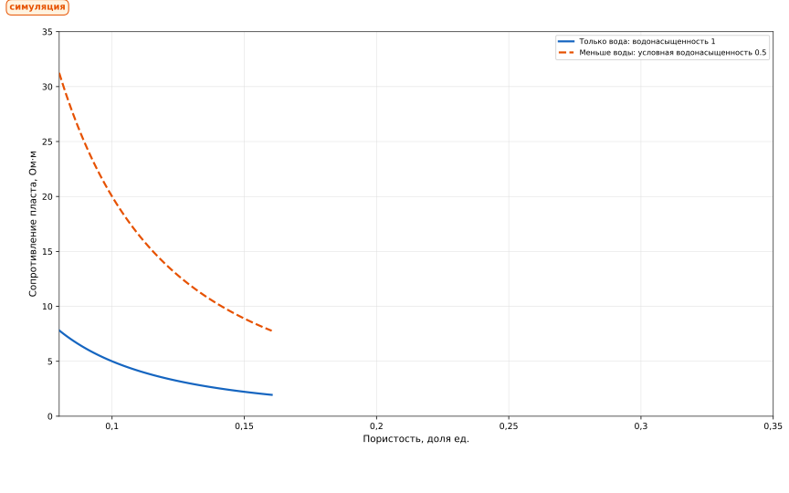
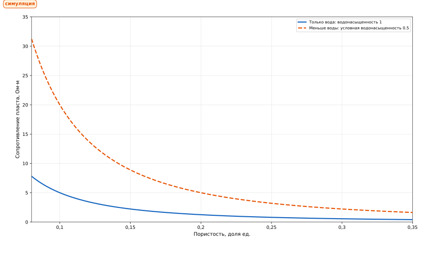
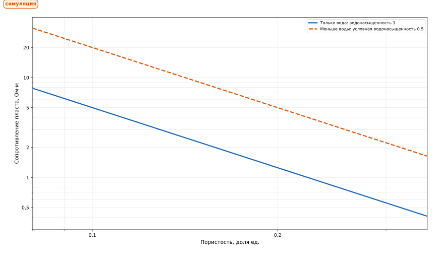

Стр. 132 · Pickett Crossplot Method
The Pickett plot (Pickett, 1966, 1973) is one of the simplest and most effective crossplot methods in use. This technique estimates water saturation and can also help determine:
Log InterpretationШаг 34 из 66
В книге: «Pickett Crossplot Method» стр. 132
Опирается на: шаг 33 «Зачем нужны диаграммы насыщения» (предпосылка), шаг 8 «Как оценить воду вдали от ствола» (предпосылка)
Диаграмма Пикетта превращает связь сопротивления и пористости в прямую для полностью водоносного интервала.
Так один график помогает оценить насыщенность и другие параметры.
Пороговая идея. Если поры целиком заполнены водой, в логарифмических координатах член, связанный с насыщением, исчезает. модель



Начало кривой на обычных шкалах: может ли представление данных помочь прочесть зависимость?
Допущения: Условные параметры для демонстрации логарифмической записи: a = 1, R_w = 0.05 Ом·м, m = 2, n = 2; водонасыщенность второй ветви 0.5. Это не данные скважины.; Расчёт опирается на явно выписанное в узле логарифмическое уравнение с R_w; первая запись в узле содержит R_o, обозначения не отождествляются..
Авторы считают диаграмму Пикетта простым и эффективным способом оценивать водонасыщенность, долю воды в порах. По ней также оценивают сопротивление пластовой воды и параметры матрицы, твёрдой части породы. Эти параметры нужны для акустического и плотностного каротажа. Истинное сопротивление пласта зависит от пористости, водонасыщенности и показателя цементации, степени при пористости. стр. 132
«The Pickett plot (Pickett, 1966, 1973) is one of the simplest and most effective crossplot methods in use.»
«This technique estimates water saturation and can also help determine:»
«- formation water resistivity ($R_w$)»
«- matrix parameters for sonic and density logs ($\Delta t_{ma}$ and $\rho_{ma}$)»
«The Pickett method is based on the observation that true resistivity ($R_t$) is a function of porosity ($\phi$), water saturation ($S_w$), and cementation exponent ($m$).»
Сначала запишите уравнение для сопротивления, затем возьмите логарифм и подставьте условие полного водонасыщения. При полном водонасыщении $S_w$ равна единице, и её логарифм равен нулю. Остаётся прямая: $\log R_t=\log(aR_w)-m\log\phi$. Здесь $a$ — коэффициент извилистости, а $R_w$ — сопротивление пластовой воды. стр. 132
«It is actually a graphical solution of Archie's equation in terms of resistivity. Archie's equation (Equation 7.1) is solved for resistivity:»
«Taking the logarithm of the equation produces:»
«If the zone is water-bearing, $S_w = 1$, $\log(S_w) = 0$, and the equation reduces to:»
В исходной записи сопротивления в числителе стоит $R_o$, а в следующей логарифмической записи — $R_w$. Для водоносной прямой здесь показана логарифмическая форма автора. стр. 132
По шагам
Формула сопротивления в том виде, в каком она дана в единице; обозначение в числителе отличается от следующей записи. стр. 132
| Обозначение | Что это | Единицы |
|---|---|---|
| $R_t$ | истинное сопротивление пласта | — |
| $a$ | коэффициент извилистости | — |
| $R_o$ | сопротивление пласта при полном водонасыщении | — |
| $\phi$ | пористость, доля объёма породы, занятая порами | доля |
| $m$ | показатель цементации | — |
| $S_w$ | доля пор, заполненная водой | доля |
| $n$ | показатель насыщения | — |
Логарифмическая запись уравнения, приведённая авторами. стр. 132
| Обозначение | Что это | Единицы |
|---|---|---|
| $R_t$ | истинное сопротивление пласта | — |
| $a$ | коэффициент извилистости | — |
| $R_w$ | сопротивление пластовой воды | — |
| $\phi$ | пористость, доля объёма породы, занятая порами | доля |
| $m$ | показатель цементации | — |
| $S_w$ | доля пор, заполненная водой | доля |
| $n$ | показатель насыщения | — |
Логарифмическая запись для полного водонасыщения. стр. 132
| Обозначение | Что это | Единицы |
|---|---|---|
| $R_t$ | истинное сопротивление пласта | — |
| $a$ | коэффициент извилистости | — |
| $R_w$ | сопротивление пластовой воды | — |
| $m$ | показатель цементации | — |
| $\phi$ | пористость, доля объёма породы, занятая порами | доля |
Полное водонасыщение задаёт опорное поведение, с которым затем сравнивают другие точки.
Преобразовать данные, чтобы степенная связь стала линейным ориентиром.
Где аналогия перестаёт работать: За линейностью здесь стоит модель породы и строгое условие полного водонасыщения.
В первой формуле числитель содержит R_o, а в следующей логарифмической записи указан R_w. Эти два обозначения не взаимозаменяемы. Формулы здесь переданы как в предоставленном фрагменте.
Верный ответ: Водонасыщенность; Показатель цементации; Пористость
Эти параметры входят в запись уравнения для сопротивления. Где это в тексте (стр. 132) →
Восстановите переход к водоносной прямой.
Перетащите пункты (мышью или пальцем за ⠿) или двигайте кнопками ↑ ↓.
Верный ответ: Запишите уравнение Арчи для сопротивления. → Перейдите к логарифму уравнения. → Подставьте условие полного водонасыщения.
После логарифмирования условие полного водонасыщения убирает один член. Где это в тексте (стр. 132) →
Все утверждения шага с дословной цитатой автора и страницей книги (по PDF).
Авторы характеризуют диаграмму Пикетта как один из самых простых и эффективных методов построения диаграмм. наблюдение
«The Pickett plot (Pickett, 1966, 1973) is one of the simplest and most effective crossplot methods in use.»
Метод оценивает водонасыщенность и помогает определить дополнительные параметры. наблюдение
«This technique estimates water saturation and can also help determine:»
Один из дополнительных параметров — сопротивление пластовой воды. наблюдение
«- formation water resistivity ($R_w$)»
Диаграмма помогает определить матричные параметры для акустического и плотностного каротажа. наблюдение
«- matrix parameters for sonic and density logs ($\Delta t_{ma}$ and $\rho_{ma}$)»
Истинное сопротивление зависит от пористости, водонасыщенности и показателя цементации. наблюдение
«The Pickett method is based on the observation that true resistivity ($R_t$) is a function of porosity ($\phi$), water saturation ($S_w$), and cementation exponent ($m$).»
Метод является графическим решением уравнения Арчи в записи для сопротивления. наблюдение
«It is actually a graphical solution of Archie's equation in terms of resistivity. Archie's equation (Equation 7.1) is solved for resistivity:»
Следующий шаг автора — переход к логарифму уравнения. наблюдение
«Taking the logarithm of the equation produces:»
В водоносной зоне водонасыщенность равна единице, её логарифм равен нулю. допущение
«If the zone is water-bearing, $S_w = 1$, $\log(S_w) = 0$, and the equation reduces to:»
Стр. 132 · Pickett Crossplot Method
The Pickett plot (Pickett, 1966, 1973) is one of the simplest and most effective crossplot methods in use. This technique estimates water saturation and can also help determine:
Стр. 132 · Pickett Crossplot Method
- formation water resistivity ($R_w$)
Стр. 132 · Pickett Crossplot Method
- cementation factor ($m$)
Стр. 132 · Pickett Crossplot Method
- matrix parameters for sonic and density logs ($\Delta t_{ma}$ and $\rho_{ma}$)
Стр. 132 · Pickett Crossplot Method
The Pickett method is based on the observation that true resistivity ($R_t$) is a function of porosity ($\phi$), water saturation ($S_w$), and cementation exponent ($m$). It is actually a graphical solution of Archie's equation in terms of resistivity. Archie's equation (Equation 7.1) is solved for resistivity:
Стр. 132 · Pickett Crossplot Method
$$R_t = \frac{a \times R_o}{\phi^m \times S_w^n} \tag{7.23}$$
Стр. 132 · Pickett Crossplot Method
Taking the logarithm of the equation produces:
Стр. 132 · Pickett Crossplot Method
$$\log(R_t) = \log(a \times R_w) - m \log(\phi) - n \log(S_w) \tag{7.24}$$
Стр. 132 · Pickett Crossplot Method
If the zone is water-bearing, $S_w = 1$, $\log(S_w) = 0$, and the equation reduces to:
Стр. 132 · Pickett Crossplot Method
$$\log(R_t) = \log(a \times R_w) - m \log(\phi) \tag{7.25}$$
На этот шаг опираются: шаг 35 «Как читать оси Пикетта», шаг 45 «Почему Хингл меняет шкалу».
Как уравнение превращается в прямую
Ссылки в ответе ведут к исходному тексту.